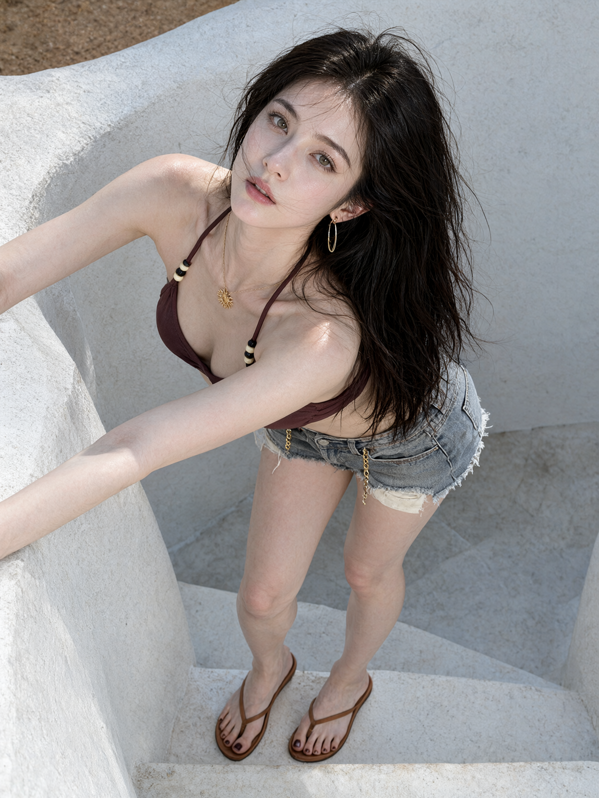

01 高位俯拍 · 白墙阶梯
一张晴天户外的写实时尚人像照片，一位25岁的成年女性站在白色水泥阶梯之间，身体向前倾，抬脸看向上方镜头，周围是具有弧形轮廓的白灰色粗糙墙面。
竖向构图，相机位于人物前上方，以较陡的角度向下俯拍，取景涵盖头顶至双脚。头部位于画面上半部中央偏右，肩膀与胸口位于中央，腰部和臀部向右后方延伸，短裤右侧贴近画面右边缘。双腿从右侧髋部向画面下方延伸，双脚接近底部。脸和肩膀靠近镜头，腰腿距离较远，呈自然的俯拍透视缩短。
人物上身向前倾，肩膀靠近左侧墙沿，臀部留在右后方。双臂向画面左侧伸出，近侧手臂横斜穿过胸前下方，前臂贴近左侧弧形墙沿并延伸出画框；另一条手臂从左上方肩部向左侧画外延伸。双手位于画框外。两腿自然分开，膝盖轻微弯曲，双脚落在下方白色阶梯上。
她抬起脸直视镜头，脸部纵轴由右上斜向左下，头顶偏右，下巴偏左。浅灰绿色眼睛清晰明亮，眉形自然，睫毛分明，眼周带淡暖棕色妆容。双颊自然泛粉，玫瑰豆沙色嘴唇轻微张开，表情平静。
皮肤白皙、白里透红，浅白底色中透出柔和粉色，面部、肩膀、胸前、手臂和双腿保持一致的白皙肤色。脸颊、肩头、膝盖与脚趾带自然浅粉红血色。额头、鼻梁、鼻尖和肩头有明亮的湿润反光，高光接近白色，中间调清透偏粉，阴影呈浅淡粉灰色。保留细微毛孔与真实皮肤纹理。
浓密的深棕近黑长发从发根蓬起，向画面右侧铺开并垂落，发梢延伸到短裤与大腿上方。风吹起零散细发丝，部分发丝横过额头、眼侧、鼻梁和嘴唇附近，长发与白灰墙面形成清楚的深浅对照。
她穿着低饱和深红棕色细绳泳装上衣，胸前布片贴合身体，暗部略带紫褐色。两侧细绳沿肩颈延伸，各串有黑色与米黄色圆珠。 下身是浅灰蓝色水洗牛仔短裤，裤脚有明显毛边与破损，裤脚下方露出浅米白色口袋内衬布片，布片垂至两侧大腿上方。 短裤腰部与前侧垂挂金色链条。 细金项链贴近颈部，金色太阳形吊坠偏向画面左侧的锁骨附近。 耳边佩戴金色长椭圆圈耳环与小耳饰。 双脚穿焦糖棕色夹趾凉鞋，细带在脚背前方交叉，俯视角度下鞋带、鞋底和脚趾清晰可见。脚趾涂深酒红色指甲油。
左侧前景是一道厚重的弧形白色墙沿，从画面中部斜向左下方延伸，占据大面积前景。人物身后是起伏的白灰色曲面墙体，表面保留粗糙砂粒纹理。下方白色阶梯有水平边沿、浅褐色磨损和细小斑点。画面顶部露出一小条褐色沙地。
日光从高处斜向照射，额头、鼻梁、肩头和手臂形成明亮反光，近侧前臂上有边缘明确的局部投影。墙面受光处呈略带冷灰的白色，阴影偏蓝灰。整体保留清晰的数码摄影质感，白皙粉润的肤色、深色长发、红棕上衣和灰白建筑各自保持明确的颜色。